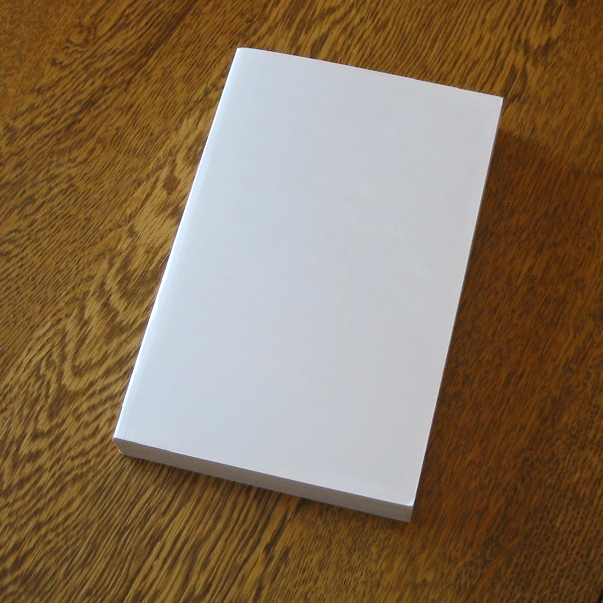
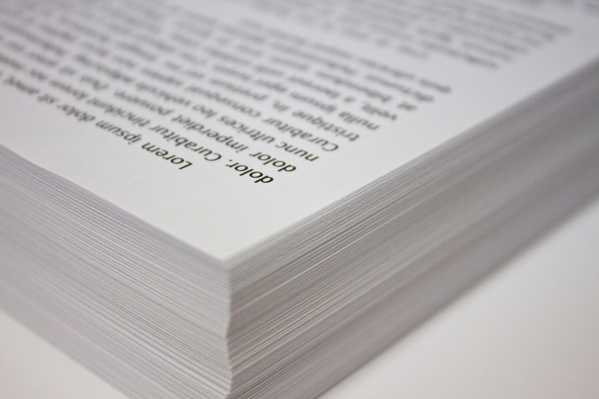

品牌识别设计
从标志、字体和色彩关系开始，整理基础使用说明。常见应用是名片和门店纸质物料。
交付 PDF 使用说明和 SVG 标志文件。
- 交付
- PDF 使用说明、SVG 标志文件
- 周期
- 通常在资料与范围确认后 4–6 周完成设计工作；客户确认等待、印刷打样与制作时间另计
- 字体
- 许可逐项核对
- 不含
- 商标检索、注册和法律审查
品牌识别与包装平面分别写明设计内容、交付文件、周期与不含项；出版物编排写明设计内容、交付文件与周期。收费按项目范围、应用数量和交付内容逐项核算，不提供统一套餐价；设计文件完成后按制作方已提供的尺寸和输出规格整理，不承接印刷生产。
从标志、字体和色彩关系开始，整理基础使用说明。常见应用是名片和门店纸质物料。
交付 PDF 使用说明和 SVG 标志文件。
围绕阅读顺序、版心、文字层级和图片编排工作。常见对象是小型品牌手册和文化项目册。
在制作方确认的刀线上安排标签信息、图文层级与系列识别。常见对象是有既定结构的日用品纸盒。
按项目范围、应用数量和交付内容逐项核算，不提供统一套餐价。
具体项目报价、合同付款节点、额外修改收费待补充；开始前确认范围与文件清单。
设计文件完成后按制作方已提供的尺寸和输出规格整理。
不承接印刷生产；纸张、油墨、工艺和实物打样由客户与制作方确认。
合同约定最终设计文件的著作权归属与使用范围，未采用方案保留在工作室。
第三方字体、图库和客户已有素材分别按各自许可使用；具体著作权条款待补充。
名称和文字最终稿、应用清单、尺寸规格、图片来源与授权、已有设计文件。
出版物另附章节顺序和完整稿件；包装项目另附制作方确认刀线，刀线版本与文案版本对应保存。

实物颜色与工艺按制作方打样结果确认。

团队协作由视觉设计和出版编排两类岗位完成；具体成员姓名与履历待补充，项目联系人按合同确认。
Stack of Copy Paper.jpg — Jonathan Joseph Bondhus; https://commons.wikimedia.org/wiki/File:Stack_of_Copy_Paper.jpg; CC BY-SA 3.0 (https://creativecommons.org/licenses/by-sa/3.0); full-frame resized/JPEG re-encoded derivative. Same source license retained.
Blank book on a table.jpg — Trey Jones; Till.niermann (brightness edit); https://commons.wikimedia.org/wiki/File:Blank_book_on_a_table.jpg; CC0 (https://creativecommons.org/publicdomain/zero/1.0/deed.en); full-frame resized/JPEG re-encoded derivative.